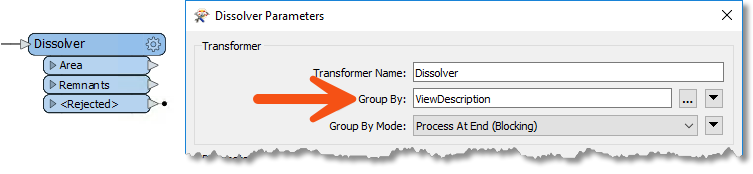
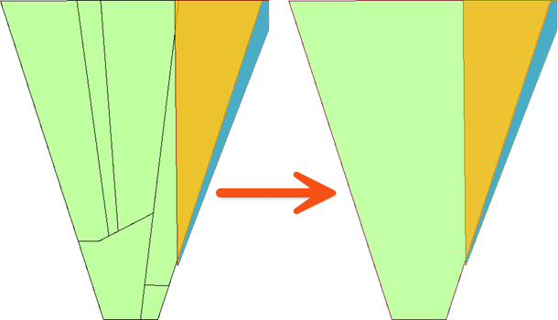

Learning Objectives
After completing this lesson, you’ll be able to:
- Explain how the Group By parameter lets you process features in groups.
- Explain the difference between the Process at End and Process When Group Changes Group By modes.
What is Group By?
Group By parameters allow features to be processed in groups by a single FME transformer.
FME transformers carry out transformations on either one feature at a time or on a whole set of features at once.
- For example, the AreaCalculator transformer operates on one feature at a time (to measure the area of a single polygon feature). We call it a feature-based transformer.
- The StatisticsCalculator operates on multiple features simultaneously (to calculate an average value for them all). In FME, we call this set of features a group and the transformer a group-based transformer.
Creating Groups
A group is a defined set of features processed by a transformer. By default, a group-based transformer treats all the features it receives as a single group.
However, such transformers also have a Group By parameter. This parameter lets the user define several groups based on the value of an attribute.

To illustrate groups, let's consider calculating the mean age of FME users. The default group for the calculation includes all FME users.
But you could instead divide everyone by their nationality and calculate the average age per country.
This is the same as having a nationality attribute in a dataset and selecting that in an FME Group By parameter.
Here, a Dissolver transformer is used to dissolve (merge) several polygon features. The selected Group By attribute is ViewDescription:

FME creates a series of groups for overlaying, where the features in each group share the same value for the ViewDescription attribute. The practical outcome is that polygon dissolving takes place only where line features share the same description:

Group By Mode
When grouping features, there are two different ways the transformer can handle the group. The first way is to hold all of the features until all of the features have come through the transformer; this is referred to as blocking. This is set using the Process at End (Blocking) Group By Mode.
The other way is to pre-sort your data into groups using a transformer like the Sorter. Then, once your data is grouped, use the Process When Group Changes (Advanced) Group By Mode. This mode will push the features through the transformer after each group, which will help speed up performance. Only use this option when your data is pre-sorted.